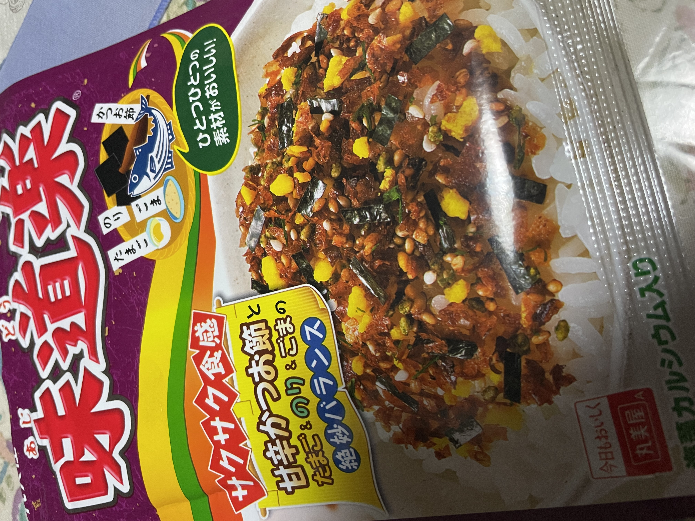

Yummy
Furikake
25/12/13（Posted） TERUO@teruo
Good.
■Furikake Rice（×Sprinkle“Ajidouraku”furikake over rice）
⇒★★★★ 4.0
■Ajidouraku（Marumiya Food Industry）
■224yen（Ajidouraku）※I bought it Sugi Drug.
■Ate day: 25/12/13
 (Photo taken by myself)